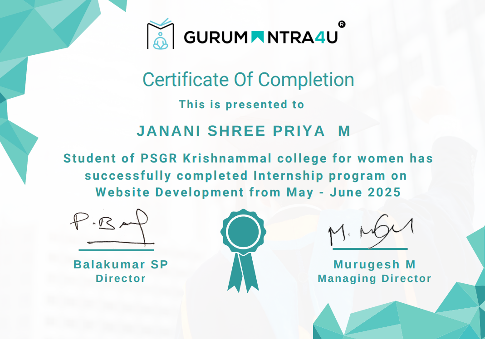
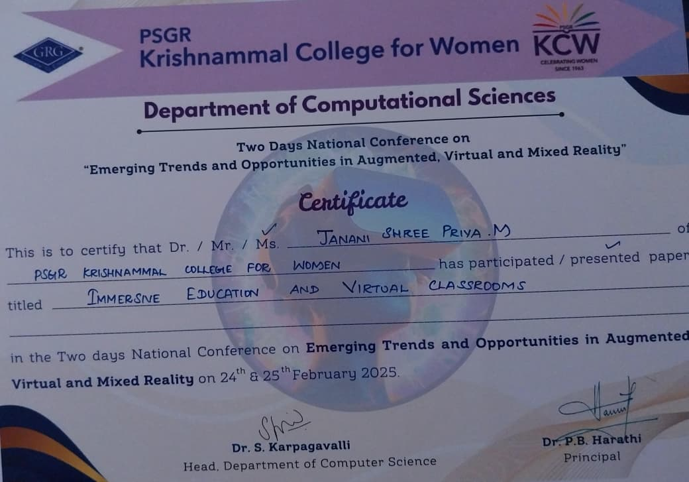
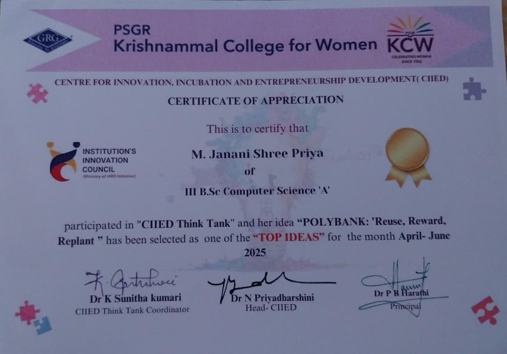

Projects
PolyBank – Reuse, Reward, Replant Initiative
Developed a sustainability-focused web platform to encourage plastic reuse and recycling through a reward-based system. The platform also provides educational content to raise awareness about environmental conservation and responsible waste management.
🔗 View Live Prototype
AquaTest – Water Quality Checker
Developed an interactive web application to analyze water quality based on pH values. The system provides clear visual feedback on water safety levels along with treatment suggestions, promoting environmental awareness and practical data interpretation.
🔗 View Live Prototype
AWS Tasks
Multi-Platform Static Website Hosting on AWS
Implemented static website hosting on AWS across multiple operating systems, including Windows Server and Linux (Ubuntu). The project involved configuring web servers, deploying static files, and ensuring accessibility across platforms.
🔗 Demo: Available on Request
Automated MySQL Backup on AWS EC2
Implemented an automated MySQL database backup solution on AWS EC2 using scheduled scripts. The system ensures secure data storage, regular backups, and quick recovery in case of failures.
🔗 Demo: Available on Request
GitHub-Integrated Website Deployment on AWS
Deployed a website on AWS with GitHub integration to manage source code and updates. Enabled streamlined deployment workflows for efficient version control and maintenance.
🔗 Demo: Available on Request
Image Hosting via Amazon S3
Configured Amazon S3 for scalable and reliable image hosting. Managed access permissions and optimized storage for web application use.
🔗 Demo: Available on Request
SMS & Email Notifications using AWS SNS
Implemented real-time SMS and email notification services using AWS SNS to deliver alerts and system updates efficiently.
🔗 Demo: Available on Request
Dockerized Web Application Deployment on AWS EC2
Deployed a containerized web application on AWS EC2 using Docker, ensuring consistent environments, portability, and simplified deployment.
🔗 Demo: Available on Request
Current Projects
PSGRKCW – LabSys
A web-based laboratory booking system developed for PSGR Krishnammal College for Women. It enables administrators to manage lab schedules while allowing staff to view availability and book lab slots efficiently.
🔗 Link: In Progress
AI & ML – Car Brand & Model Identifier
An AI & Machine Learning project that identifies car brands and models from images using computer vision techniques. Focuses on image classification, model training, and improving prediction accuracy.
🔗 Link: In Progress
Swiggy Clone – UI/UX Design (Figma)
Designed a high-fidelity UI/UX prototype for a Swiggy-inspired food delivery application using Figma. The project focuses on intuitive user flow, usability, responsive layouts, and modern mobile-first design principles.
🔗 Prototype: To Be Added
Experience
Web Development Intern
Organization: GuruMantra4U
Date: June 2025
Role & Work: Worked as a Web Development Intern, gaining hands-on experience in HTML and CSS. Contributed to building responsive web pages and strengthening core frontend development concepts through real-time tasks.
Skills Gained: HTML · CSS · Responsive Design · UI Structuring
Software Analysis – Optech Billing Software
Organization: Shree Karunambikai Traders
Role & Work: Analyzed the Optech Billing Software by studying its system flow, modules, and user interaction processes. Documented the software in a user-friendly manner, focusing on usability for end users and supporting business operations.
Skills Gained:
- Analytical thinking
- System understanding
- Technical documentation skills
- Ability to explain software from a user perspective

Achievements
National Conference Paper Presentation
Institution: PSGR Krishnammal College for Women (PSGRKCW)
Paper: Immersive Education and Virtual Classroom
Theme: Emerging Trends and Opportunities in Augmented, Virtual & Mixed Reality – 2025
Date: June & July 2025
Presented a research paper on a technical topic, demonstrating analytical and communication skills.
CIIED – Top Idea (2×)
Projects: AquaTest, PolyBank
Work: Developed working prototypes
Duration: June–July & July–August 2025
Selected as a Top Idea by the CIIED Think Tank Innovation Cell for innovative solutions on two occasions.
SpotKnack – Cloud Computing Program
Achievements: Yearly Topper – 2nd Place | Monthly Topper – Several Times
Year: 2025
Gained advanced understanding of AWS and cloud services, with hands-on practical implementation experience.